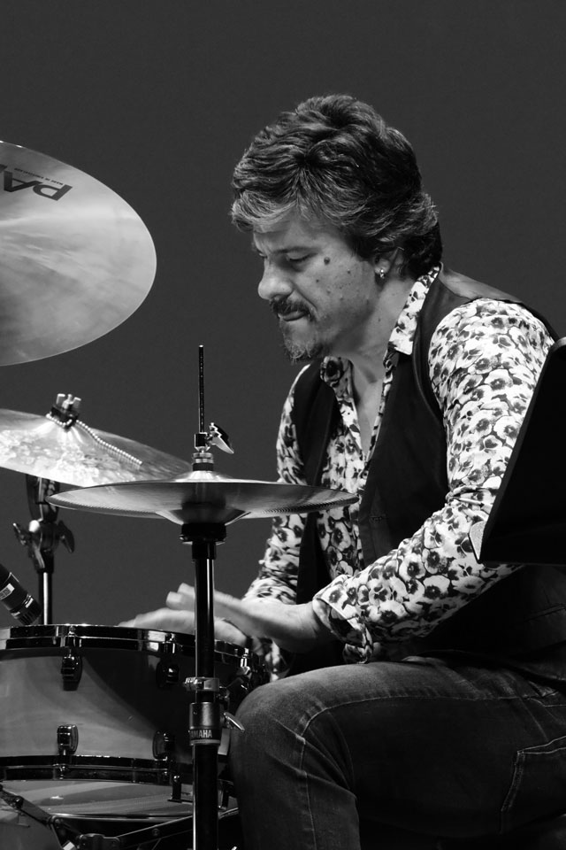
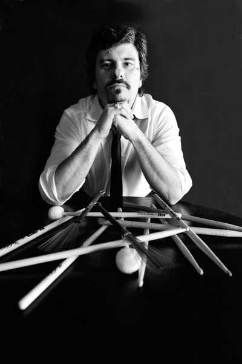
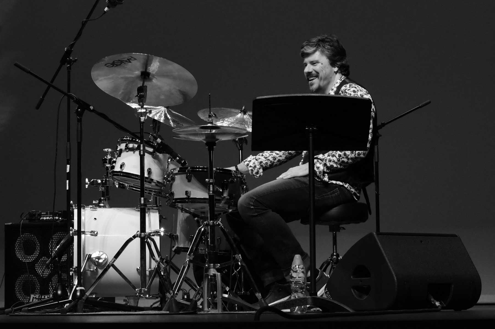

- 
- 
- 
Francesco Lomagistro
Drummer
Percussionist
Francesco Lomagistro, began piano studies at age of 11 and later switched to drums. He received his music education through private lessons and attendance at seminars by great musical Masters. He received his Degree in ‘Percussion Instruments’ at the “Niccolo Piccinni” Music Conservatory in Bari, Italy and the Degree in “Didactis for Musical Instruments ”- He teaches “Drums and Percussions” at Liceo Musicale.
He leads the group Berardi Jazz Connection, a European jazz project whose release 4 cd well known around the world, Japan ahead, and Usa and North Europe, and since 2016 he formed a new trio project the T-Riot, with which he released the first cd "A different truth" for the japanese label Albòre Jazz, conquering new fans in Japan, North Europe, South Africa and Usa.
His versatility has afforded him experience in different musical ambients collaborating with different artists as: Kay F. Jackson, Joice Youlle, Kelly Joyce, Sandra St. Victor, Wendy Lewis, Madame Pat Tandy, Orlando Johnson, Mariella Nava, Antonella Ruggero, Milva, Cecilia Gasdia, Elio, Erz, Freak Antoni, Edoardo Bennato, Mimmo Locasciulli, Mario Rosini, Fabrizio Sotti, Chihiro Yamanaka, Rick Stone, Rotem Sivam, Marcus Machado, Marco Panascia, David Schnitter (Jazz Messengers), Dario Deidda, Max Ionata, Gigi Cifarelli, Roberto Ottaviano, Vito Di Modugno,Fabio Morgera, Aldo Vigorito, Carol Sudhalter, Cicci Santucci, Enzo Scoppa, Antonio Marangolo ,Gaetano Partipilo, Francesco Puglisi, R. Biseo, P. Ciancaglini, Marco Tamburini, Giuseppe Bassi, Eddy Olivieri, Francesco Mariella, Ettore Carucci, Camillo Pace, Eugenio Macchia, Nico Morelli, Paola Arnesano, Teo Ciavarella, , Poldo Sebastiani, Tino Tracanna, Barend Middlehoff, Toni Fomichella, Orchestra della Magna Grecia I.C.O , Orchestra del DAMS di Bologna etc etc..
He has participated in different recording sessions for different labels such as Virgin, Universal, Hobo-Sony, Edel, Storie di Note, Irma Records, Antibemusic, Family Affairs, Flaminio Jazz, P-Vine records, Four, Caffè Concerto, Dodicilune, Self, Jazz Engine/Auand.
He played in different venues as theatres, clubs and festivals in Europe, USA and Asia.